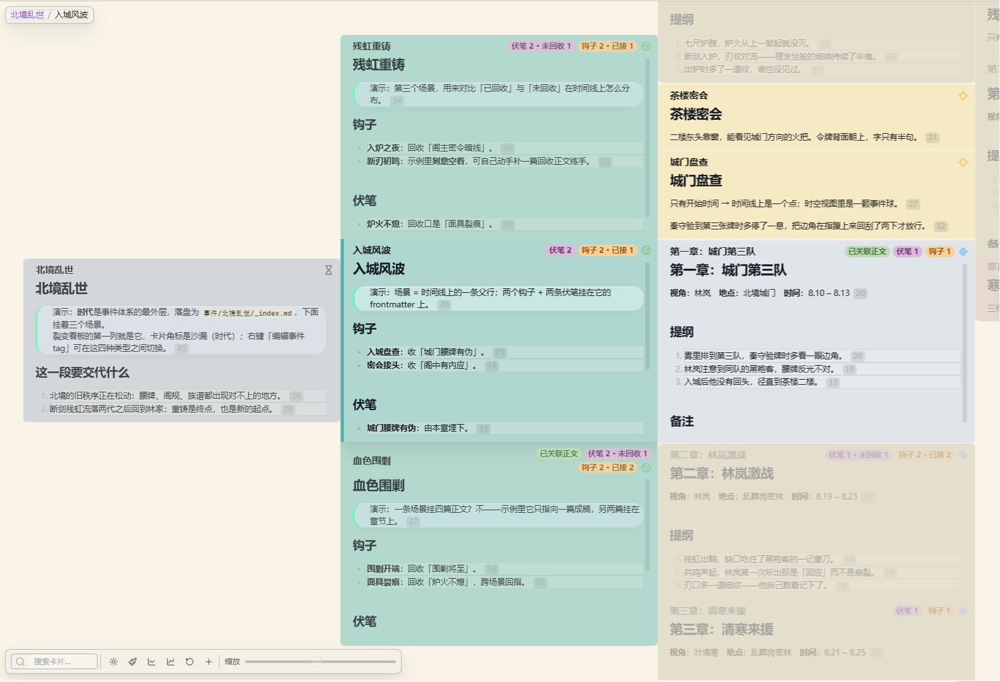

裂变
功能简介
多列卡片大纲，默认看 事件/。每张卡就是一篇笔记。旧视图 id 叫 gingko，会迁到 fission。
本页属于「创作面板」，按 功能简介 → 界面元素 → 操作方法与步骤 → 键盘操作 → 命令行 → 注意事项 组织，末尾的「其他」放补充说明与相关页面。
界面元素
界面元素一览
- 多列看板与列内卡片
- 工具栏的重新加载与搜索
- 祖先栏
- 缩放与平移控件

操作方法与步骤
怎么打开
创作面板 Tab「裂变」，命令「打开裂变视图」。
操作
- 点卡展开下一列。上/下/右小箭头：前兄弟、后兄弟、子卡。
- 拖卡调整顺序，写的是文件夹与文件位置。列序也会反映到文件侧。
- 搜索、规则、外观在工具栏。卡片上可直接改字段。
- 右键改事件类型（时代/场景/章节/情节），角标换图标，滚动位置尽量保持。
- 右侧情绪曲线：每张卡一个「情绪变化」，相对上一张加减，从 0 累加。拖点写回该笔记。
- 角标伏笔状态按命运蓝图 + 事件路径推断，不读事件 YAML 槽。
- 灵感可拖入生成情节。大操作（加父卡、合并、拆分）底部有进度条。
数据：System/fission.json（顺序、外观、规则）。
键盘操作
| 按键 | 作用 |
|---|---|
| Ctrl/Cmd+P | 打开 Obsidian 命令面板，按名称搜索并执行本页「命令行」里的命令（Obsidian 自带，不是插件默认快捷键） |
| Ctrl/Cmd+Z、Ctrl/Cmd+Y 或 Ctrl/Cmd+Shift+Z | 撤销 / 重做 |
| Ctrl/Cmd+F | 聚焦搜索框 |
| Ctrl/Cmd+= 或 - 或 0 | 放大 / 缩小 / 缩放回 100% |
| [ | 开关祖先栏 |
| Ctrl/Cmd+C 或 V | 复制 / 粘贴卡片 |
| Ctrl/Cmd+O | 打开当前卡片源文件 |
| Ctrl/Cmd+Shift+L | 按空行拆分卡片 |
| Ctrl/Cmd+M | 合并上一张；多选时合并所选 |
| Ctrl/Cmd+Shift+G | 添加父卡 |
| Ctrl/Cmd+N 或 Shift+Ctrl/Cmd+N | 新建同级 / 新建子卡；无选中时建根卡 |
| F2 | 改标题 |
| Ctrl/Cmd+Space | 进出多选 |
| ↑ 或 ↓（Shift 范围多选） | 同列选卡；→ 进子卡、← 回父卡 |
| Alt+↑、Alt+↓ | 同列挪卡 |
| Home、End、Ctrl/Cmd+Home、Ctrl/Cmd+End | 跳列首尾 / 跳兄弟组首尾 |
| Esc | 多选收成当前卡 |
| Enter | 打开卡片编辑 |
| Shift+Delete 或 Shift+Backspace | 删除（仍走确认） |
| Ctrl/Cmd+Enter、Esc（正文编辑态） | 保存并在后方新建同级 / 保存退出 |
所有视图级快捷键在输入框、正文编辑态内都不触发（isTypingTarget 判定）；隐藏或失焦的面板也不响应。下表的「命令行」是另一套入口，两者不要混为一谈。
命令行
在命令面板（Ctrl/Cmd+P）里搜「命令面板里的名称」这一列的中文名即可执行。下表同时给出命令 ID，方便在「设置 → 快捷键」里精确查找、以及在 data.json / 同步配置里核对。
| 命令面板里的名称 | 命令 ID |
|---|---|
| 打开裂变视图 | novel-open-view-fission |
以上命令均没有默认快捷键：源码里的 addCommand 没有声明 hotkeys，需要快捷键请自行到「设置 → 快捷键」绑定。命令面板本身由 Obsidian 提供，不是插件命令。
注意事项
Tip
演示或外部改过文件后，点工具栏「重新加载」。裂变不自动跟随外部刷新，避免正在看时被打断。
通用限制
- 本插件 manifest 声明
isDesktopOnly: true，最低 Obsidian 1.8.7；笔记始终是明文 Markdown，插件只读写 frontmatter 与System/*.json。 - 插件没有为任何命令注册默认快捷键，需要快捷键请到「设置 → 快捷键」按命令名搜索后自行绑定。
- 视图级快捷键只在画布 / 视图聚焦且可见时生效，输入框内不触发。